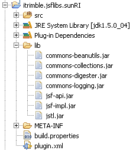

Creating Plugin-Provided JSF Libraries |
The JSF Tools Project provides functionality whereby a named collection of artifacts (typically JSF implementation and component JARs) can be created once per workspace and referenced any number of times by projects within that workspace. This avoids the JSF application developer having to import the same JSF implementation and component JARs each time a new JSF project is created. Each named collection is called a "JSF Library" in the JSF Tooling, and UI is provided to manage the libraries and references of them by projects.
Recognizing that teams are somewhat likely to use the same sets of JSF
implementation and component JARs (and, hence, the same JSF Libraries), the
JSF Tooling provides an extension point,
org.eclipse.jst.jsf.core.pluginProvidedJsfLibraries, that enables a plugin
author to provide one or more JSF Libraries as one or more plugins. This
frees other team members from needing to use the provided UI to manage
commonly-used JSF Libraries and also provides consistent and predictable
use of JSF Libraries within teams.
Begin by creating a plug-in project, specifying creation of a Java project
in the wizard. Once the project is created, add a plugin dependency on
org.eclipse.jst.jsf.core. Add an extension of
org.eclipse.jst.jsf.core.pluginProvidedJsfLibraries. Set the extension's
ID to a unique value (fully-qualified in Java package style recommended).
Right-click the jsfLibraries extension and select New >
jsfLibrary. Give the jsfLibrary a meaningful id, specify if it is a JSF implementation,
supply a label for display that can be externalized, and specify the
maximum JSF version that it supports. A fully-qualifed classname for
the archiveFilesDelegate property (see next section for creation of this
class) is also required.
The JSF Tooling provides a base, abstract class
org.eclipse.jst.jsf.core.jsflibraryregistry.PluginProvidedJSFLibraryArchiveFilesDelegate that your delegate class must extend to provide the archive files that
make up your JSF Library. Create a Java class with the fully-qualified name
that matches the archiveFilesDelegate property specified in the previous
step, and that extends this abstract class. Override the getArchiveFiles() method, and supply a method
body that builds a Collection of archive files using the addArchiveFile() method. An example follows.
public void getArchiveFiles() {
addArchiveFile("lib/commons-beanutils.jar");
addArchiveFile("lib/commons-collections.jar");
addArchiveFile("lib/commons-digester.jar");
addArchiveFile("lib/commons-logging.jar");
addArchiveFile("lib/jsf-api.jar");
addArchiveFile("lib/jsf-impl.jar");
addArchiveFile("lib/jstl.jar");
}
As can be seen in the previous example code, the archive files that make up the JSF Library are specified relative to the plugin itself. Create any appropriate folders (following the example code, create a "lib" folder) and import archives files into the appropriate folder(s).
Due to limitations in the current version of the JSF Tooling, package and distribute completed plugin as a folder, not as a JAR.